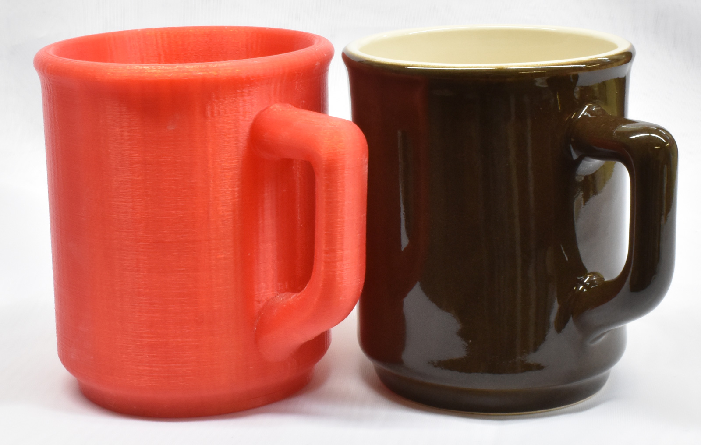
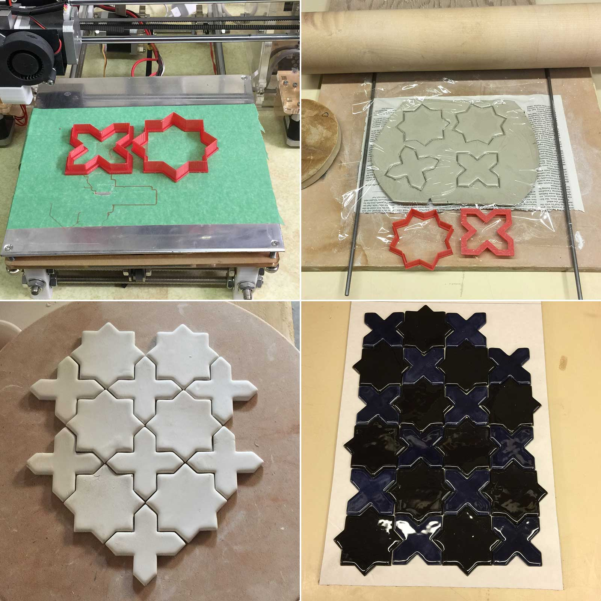
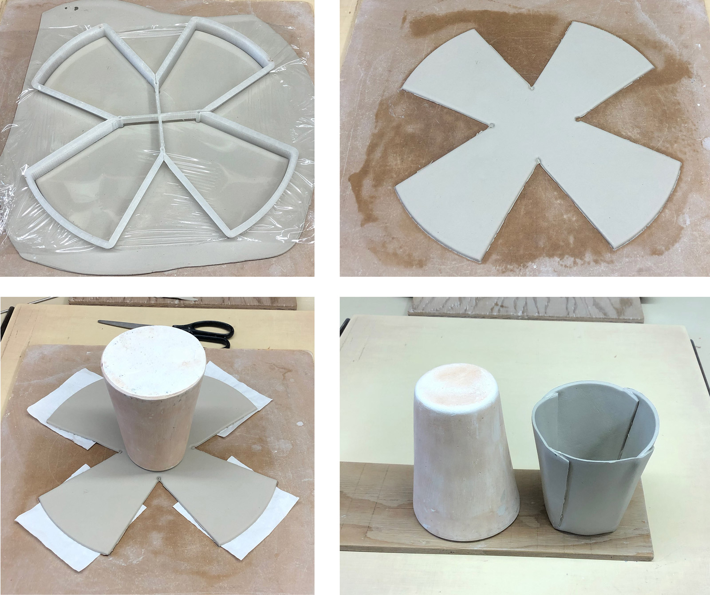
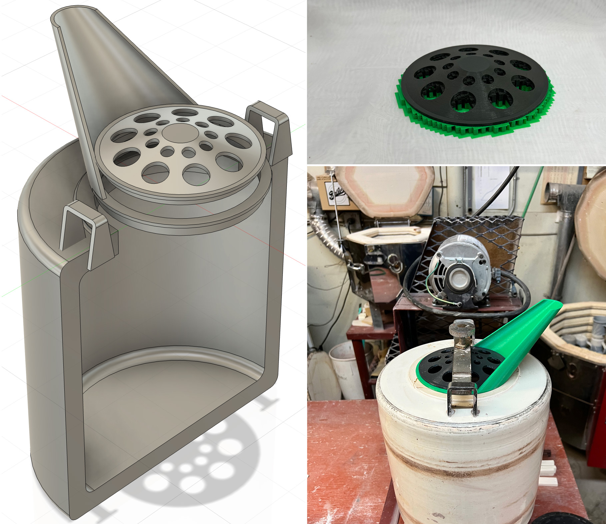
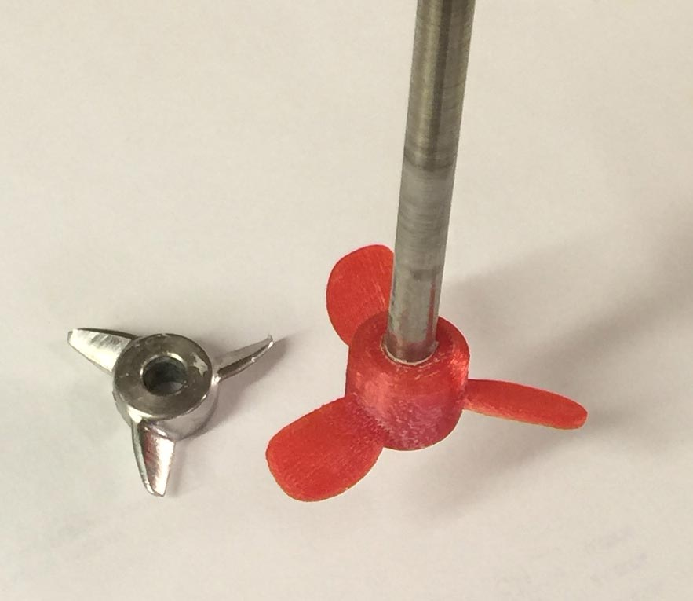
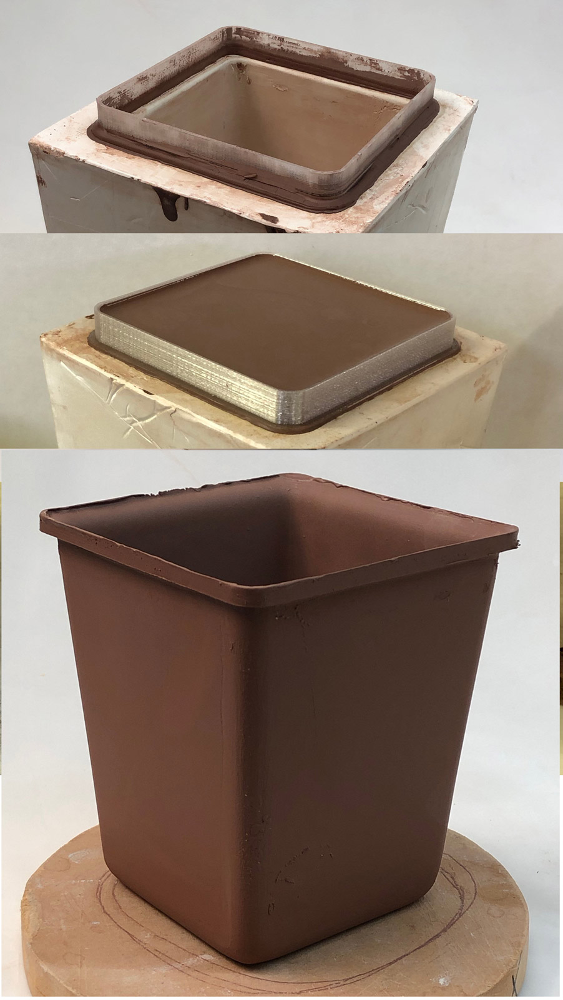
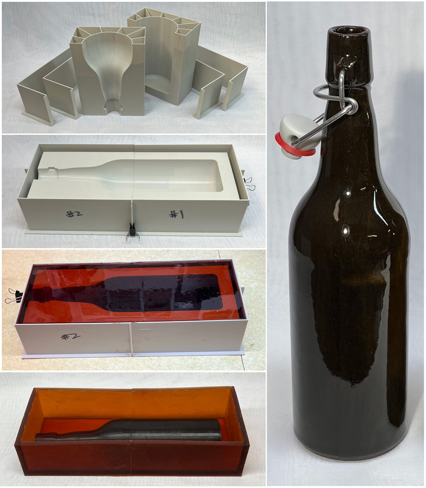
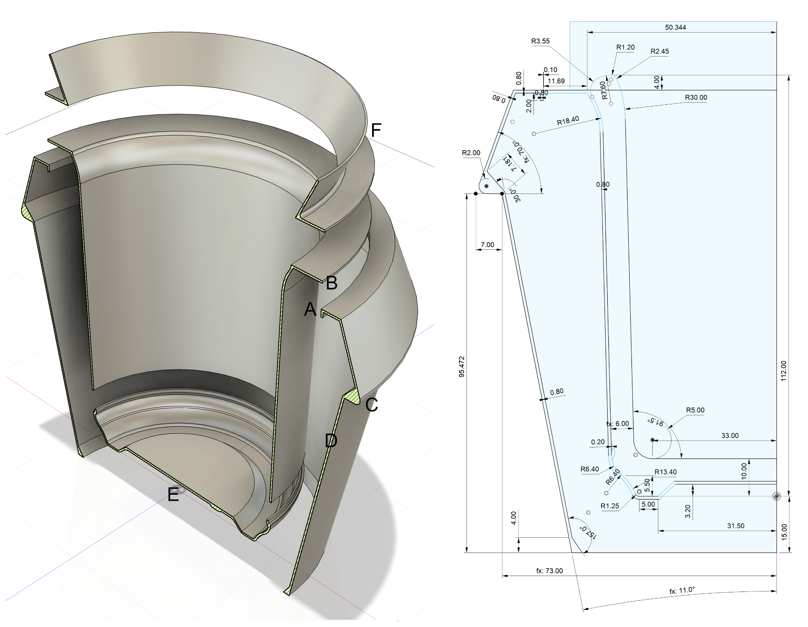
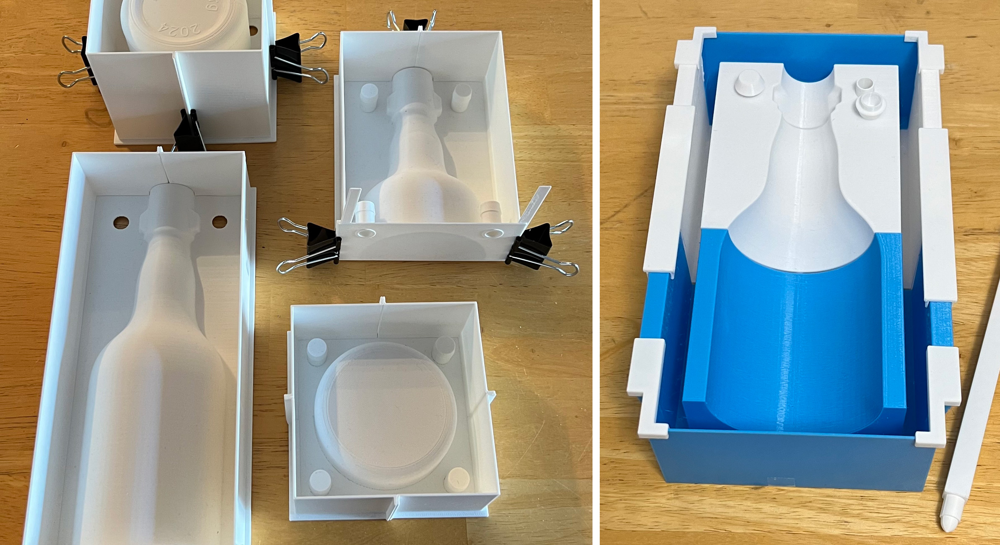
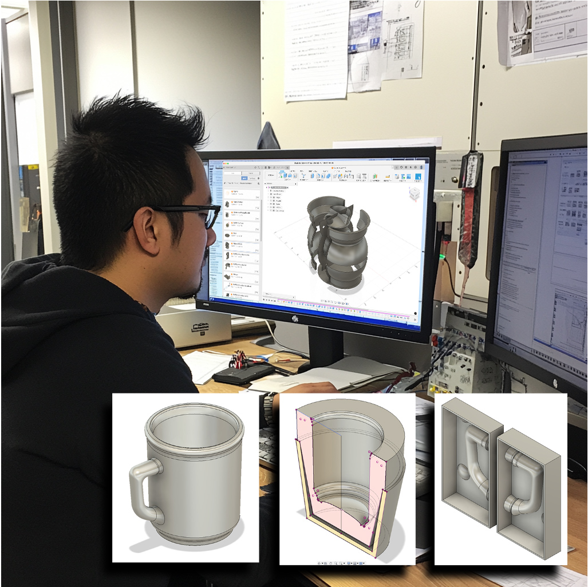

3D-Printing
Standard 3D printing technology (not printing with clay itself) is very useful to potters and ceramic industry in making objects that assist and enable production.
Key phrases linking here: 3d-printing, 3d printing, 3d-printed, 3d printed, 3d-print, 3d print, 3dp - Learn more
Details
When this site refers to 3DP or 3D printing, we are almost always referring to the use of a consumer FDM printer using PLA filament. These are now inexpensive commodity items and skills in their use are becoming very common. Although most people download STL files for things they print, more and more are learning to use CAD software and create shapes themselves.
It is becoming more practical for potters and ceramic artists or entrepreneurs to take on projects never before possible because of the increasing accessibility of 3D printing. 3D printing makes you more independent. Ordinary consumer FDM printers are useful for making mock-ups, master and block molds, forms, templates, mold pour-spouts, supports, holders, spacers, cutters, tools, stamps, embossers, rollers and more. It puts forming techniques you would not otherwise use (e.g. jiggering, casting, pressing, extruding, stamping) into easier reach.
The most difficult obstacle to adopting 3D printing is learning 3D design software. Don’t bother buying a printer till you do that (or you will have a printer with nothing to print). The software is intimidating. However the existence of standards is a big help in navigating all the options - terminology and methodology are very similar across all products. Choosing which 3D CAD design tool to use is a challenge, but there are "on ramps" for hobbyists and small businesses that enable using software tools of incredible capability for relatively low cost (or even free).
Online service providers offer a wide range of printing technologies and materials, so you can email or upload 3D files. An exciting technology is laser fusing of powder, even metal powder (in this way metals and ceramic can be precisely printed). That being said, it may still be best to have your own printer. This is because the process of learning and perfectly designing involves cycles of tweaking designs and reprinting them. The freedom to do this is a big part of the utility of 3D printing, at least for hobbyists, potters and small manufacturers. Once you have a proven design, then consider sending it (for higher quality or saving time). Craftcloud3d.com might be a good start.
Owning your own printer is was first possible because of the RepRap international movement to develop open-source hardware and software platforms for 3D printing. Reprap printers used standard buy-at-a-hardware-store parts or ones that a printer itself can make. This means that anyone can buy and assemble an inexpensive printer to learn many details of their mechanics and operation. Of course today people buy commercial units that grew out of that movement. But DIY is still firmly embedded in the hardware and software.
Making practical use of the technologies and not getting caught up in the hype of things can be challenging. One way to do this gradual evolution, is just learn what you need to make the item required today. Contrary to the previous statement, it may be good to buy a printer before learning the design software, watching it sit idle will motivate you to learn Fusion 360 (or similar). By the same token, paying a consultant on Upwork to help you learn will motivate progress, just to avoid wasting that money and paying more consultants! The real “lights-on” moments will happen when you develop ways to draw things that are better than the teachers.
Filament: Each filament has advantages and disadvantages (e.g. cost, toxicity, temperature required, wear and tear on your machine, surface quality, durability, print speed possible). Use PLA at the start, it is important to have the fewest problems, this whole business is difficult enough, avoid any possible discouragements.
Related Information
On-Ramp to 3D-Printing Molds:
Download and print something as a first step.

This picture has its own page with more detail, click here to see it.
3D design and printing is so valuable in ceramics that we can't stop pushing it. Here is how one goes about 3D printing a 3MF model file downloaded from this site. Why 3MF? Unlike the much older STL format, it enables multiple objects, units of measure and meta information. If you are on the page hosting this image, there is a link to the five-minute tutorial video at the bottom (otherwise click the image).
The 3D printed hinge demonstrates the capability of a consumer printer
This was printed as an assembly. The grooves between the teeth were filled with printed support but it cleaned out easily. The hinge moves smoothly and has no slack. I did not draw it, I downloaded it as an upgrade to the door in my Creality K1 Max printer. Making something like this is a good lesson in the precision that consumer printers are capable of. Stratasys, a long-time maker of industrial 3D printers is suing Bambu Labs, a maker of low-cost consumer machines similar to those from Creality. Stratasys apparently sees a real threat from consumer printers that are gaining quickly, and in some ways surpassing the capabilities of industrial devices.
Final cast-jiggered cone 6 mug beside original 3D-printed mock-up

This picture has its own page with more detail, click here to see it.
This is a product of a casting-jiggering project I did in 2019 to recreate a 1960s Medalta Potteries mug. The first step was drawing a profile in 2D (using Adobe Illustrator) and then working with a Fusion 360 freelancer at Upwork.com to create a quality 3D drawing. 3D printing this mock-up was possible after that, using my favorite 3D slicer, Simplify 3D. The mug was drawn "parametrically", that is, measurements and geometric relationships were built-in such that changing contours and the size preserved the original design. The first production mug, made about a year later, is on the right. Molds were scaled up 10% from this mockup size so that final pieces would be this size, however the firing shrinkage of the clay turned out to be about 12%.
Making complex ceramic tile shapes by 3D printing your own cookie cutters

This picture has its own page with more detail, click here to see it.
This was done on an affordable RepRap printer. The red plastic templates were drawn in Fusion 360 and sliced and printed using Simplify3D. A wooden block was used to press these cookie cutters into the clay. The plastic wrap made sticking a non-issue (and rounded the corners nicely). Commercial bottled glazes were applied to this low fire talc body by brushing (in three coats) after bisque - the rounded corners make brushing easier. The tiles were fired at cone 03. This is an old classic design that I discovered when researching Damascus tile. The toughest obstacle was learning how to use Fusion 360. It turns out that cookie cutters are a starter project for many 3D software packages, there are lots of videos on making them.
Large cookie-cutter 3D-printed in four pieces

This picture has its own page with more detail, click here to see it.
These four sections were glued together to make a larger one. The plastic wrap (top left) rounds the corners. This method makes it possible to quickly precision-cut the shape for making many pie-crust mugs at a time. Later, I reprinted these templates on a better 3D printer so the vertex holes (top right) cut larger and are better formed (these holes are important, they enable the folds to overlap naturally at the corners). For thin-walled pieces like this, it is necessary to use a highly plastic clay so that when the board is flipped, the four sides fall downward against the mold without ripping (I have a tissue under each to assure that none will stick to the board during flipping). The overlaps are simply glued with slip (no scoring is needed). As soon as possible, each piece is turned over to ensure even drying. These almost never crack no matter how fast they are dried. Incredibly thin-walled pieces can be made.
3D printed spout for ball mill prevents hernias!
Available on the Downloads page

This picture has its own page with more detail, click here to see it.
When full of balls and glaze, this Royal Doulton ball mill weighs about 80 lbs. If efforts to pour it out don't cause a hernia, the slurry ends up spilling everywhere as the balls come out with it! Trying to stop the balls with my hand ends up spilling more. The answer was to 3D print two pieces: A spout and a ball retainer (upper right). The bar and screw that normally hold the lid on work well to keep the spout in place. For multiple batches of the same glaze, the jar can now be poured right from our table-mounted rack.
This was drawn in Fusion 360, but it would be doable in any other CAD program capable of revolving, extruding and lofting. I first printed the green ring and flange (without the spout) to achieve a good fit into the neck the jar. This took several prints. It became evident that a better seal is possible by scaling it back enough to make room for a wide rubber band stretched around it. Your jar will, of course, be different than this, so you'll have to custom-design for it. On cation: If printed using PLA filament, don't wash it in hot water or it could deform.
Printing a prototype propeller for my Lightnin lab mixer

This picture has its own page with more detail, click here to see it.
The worn-out stainless propeller was going to cost $500 to replace. But the size and pitch of the blades was not ideal anyway. So I drew them using Fusion 360 and printed in PLA plastic, this enabled experimenting with different sizes and pitches. How about getting a tight fit on the shaft? No problem. I measured it with calipers and printed that size. It was a little tight so I printed it slightly larger. One issue: Mixing slurries with hot water bends the blades and the collar loosens.
A 3D-printed spout enables a flared rim on cast ware

This picture has its own page with more detail, click here to see it.
It was glued down using the casting slip itself (it stuck in seconds). About ten minutes after draining a fettling knife was run around the inside, then it detached easily. The overhung lip produced imparts structural strength that resists warping, for drying and firing, to the thin walled piece. This spout has advantages over the traditional "spare" built in to the upper part of a mold. It enables a one-piece mold. The lip can be more overhung. Draining is cleaner and easier. Molds are lighter. Extraction can be done sooner and it is easier. The spout does not absorb so there is less scrap. The degree of overhang is adjustable by simply printing new spouts.
Version 2 Ceramic Beer Bottle Mold
Making a rubber case master mold

This picture has its own page with more detail, click here to see it.
This time I printed the block mold, rather than the case mold, in six pieces on my consumer 3D printer.
Top: I printed the two halves upright (creating them in the slicer rather than Fusion 360). Because the print lines run concentric the quality is so much better than the previous version printed flat. The ribbing inside made the halves strong so they did not go out of shape when filled with plaster (to give them weight).
Second: The mold halves were simply laid against each other - they mated perfectly (and stayed in place because they are full of plaster). The four rails were then clamped in place.
Third: The PLA was soaped (using Murphy's Oil Soap) and rubber poured in (Smooth-On PMC-746). The next day it easily pulled out.
Fourth: The finished rubber case mold. The sides are pretty flabby so I make them rigid using the four rails (placed upside down).
Right: Using a plaster mold created from this rubber case mold I slip-casted a bottle using my L4768D recipe, glazed it with GA6-B and fired it at cone 6.
3D printed three-piece jigger case mold complete
Available on the Downloads page

This picture has its own page with more detail, click here to see it.
It is now practical to make true-round, perfect-fitting, all-in-one case molds for jiggering using a consumer 3D printer and PLA filament. This was a one-off test mold to demonstrate the method but these print so fast this is suitable to make dozens of molds. The process: Create the drawing in 3D CAD (e.g. Fusion 360), print the three sections, glue them, turn the assembly upside down, fill with plaster, let it set and peel out the inside two pieces using a heat gun.
Things to note:
-The outside profile can be adjusted to fit your jigger machine or cuphead.
-This is light and prints quickly.
-The shoulder (C) is printed solid and the PLA printed surface from A to D is left in place permanently, this enables precise and durable fit into the cuphead. I print the outside shell upside down, so no printed support is needed.
-The down-pointing flange (A) embeds it into the plaster providing a durable edge against which to fit the pour spout (F). The glue joint connecting A & B breaks when B+E are removed.
-B and E are printed upside down, no support is needed for B (since the top is open).
-The base E has a flange that enables gluing it precisely into B. Debossed logos are practical on the base. It prints upside down for maximum quality.
You can get this on the downloads page.
3D printing case vs block molds for ceramics

This picture has its own page with more detail, click here to see it.
Left are case molds, they are made by 3D printing the positive profile on a backplate (with holes for natches). These are secured into slotted rails. Right is a block mold, it is made by 3D printing the profile of a working mold with integrated rails. This one is printed vertically in four pieces. It is held together and straight with printed brackets. We pour rubber into these to make case molds. Each method has advantages and issues.
-Case: Faster to print. Easier to draw. Joins cast as easily removed bumps on the working molds. This is only suitable for prototyping, making one working mold.
-Block: Much more attention is needed in printing, there are more issues with orientation of print, infill, printed support, multi-piecing, fit and seam-filling. 3D drawing of these is more difficult. And block molds are bigger because they are molds of molds. They also need to be more precise to merit the cost of the rubber.
3D mechanical design software 2025:
Which is the best for mold making in ceramics?

This picture has its own page with more detail, click here to see it.
CAD software and 3D printing are a potential revolution in vessel mold-making for ceramics (3D modelling is another topic). But there are two big problems: There is no way a potter, hobbyist or even small manufacturer can afford the typical software cost. While it is true most have free or low-cost trial or hobby versions, the strings attached are deal breakers. The second problem is the complexity of learning - that can be a bigger obstacle than cost.
Until the recent price increase, Fusion 360 seemed to be exactly what was needed. A great way to on-board the CAD world, using the free version and its great learning resources and best-in-class user interface. It is new and modern, a YouTube star. It is fully parametric, supporting constraints and a timeline. True, it can choke on more complex drawings on consumer computers, but we don’t need to do those. But, for commercial use, it costs $700/yr. But that is cheap compared to some others! Upon discovery of the capability, the cost might be doable for you.
Here are the ones you likely cannot afford (and maybe don't want):
-OnShape runs in your browser and on iPad; in our testing, it looks really good. Free-version drawings are public (but no other restrictions). Going private costs $1500/yr.
-Rhino is usable for CAD but is polygonal and targeted at modelling. It is not fully parametric and does not have a traditional timeline (however, Rhino+Grasshopper is life-changing for geeks, both for CAD and modelling). $1000 to buy, but upgrading is $500+.
-Solidworks is a long-time proven product, it is fully parametric with editable history. Runs on Windows only (or the xDesign product runs in a browser like OnShape). It is low cost for hobby use (but the restriction of not being able to save or open the commercial SolidWorks file format is a potential deal-breaker for hobbyists). For commercial use: $2600/yr in 2025.
Some upcoming possibilities:
-FreeCAD is becoming more viable. It is parametric, has constraints and exports and imports popular formats (but with lots of issues). Its model tree is equivalent to the Fusion 360 timeline, but more clunky and depends on careful setting of constraints. The learning curve right now puts it out of reach of most. But a capital injection, like Blender got, is coming.
-Shapr 3D costs $299/yr, also works on iPad (which Fusion 360 does not), and uses the Parasolid engine like OnShape and SolidWorks. But it seems to be targeted at being intuitive for conceptual modelling and quick prototyping for drawings that are finalized in other products (limited support for accurate feature placement, constraints, parametrics and boolean operations).
Links
| Glossary |
3D Printer
Standard 3D printers (not clay 3D printers) are incredibly useful in ceramic production and design, bringing difficult processes within reach of potters and hobbyists. |
| Glossary |
Upwork
Using the services of online freelancers connects potters and small ceramic producers to expert engineering talent at low cost. |
| Glossary |
3D Design
3D Design software is used to create dimensionally accurate objects by sketching 2D geometry and transforming it using tools to rotate, extrude, sweep, etc. The software generates the polygon surface. |
| Glossary |
3D Slicer
A slicer is software that can cut a 3MF, OBJ or STL 3D model file into hundreds or even thousands of layers and then control a printer to print them layer-by-layer. |
| Glossary |
3D Printing Clay
Clay for 3D printing. People are getting carried away with the technology and forgetting the common sense things relating to the clay. |
| Projects |
2019 Jiggering-Casting Project of Medalta 66 Mug
My project to reproduce a mug made by Medalta Potteries more than 50 years ago. I cast the body and handle, jigger the rim and then attach the handle. 3D printing made this all possible. |
| Projects |
A cereal bowl jigger mold made using 3D printing
A new way to 3D-print your way to making jigger molds and templates. The molds are encased in a 3D printed shell that makes them fit perfectly into the cuphead. And the template is precise and very effectivwe. |
| URLs |
https://sites.google.com/site/openprojectspage/cera-1-clay-extruder
The CERA-1 3D printer project at sites.google.com by Bryan Cera The CERA-1 is a mechanical paste extruder and 3D printer framework developed for clay 3D printing. It was designed in partnership with Amaco/Brent and Duet3D, it is published here as an open-source hardware project. |
| URLs |
https://all3dp.com/1/types-of-3d-printers-3d-printing-technology/
The seven main types of 3D printing technology |
| URLs |
https://www.autodesk.ca/en/products/fusion-360
Fusion 360 Parametric 3D CAD software This is incredibly powerful software that available to anyone with a moderately powerful PC or Mac. Engineer, design, and create anything in 3D. Although a challenge to learn, the abilities that this provides can revolutionize any ceramic production effort. |
| URLs |
https://www.onshape.com
OnShape parametric cloud-native CAD software This is looking like my new favorite 3D CAD package. It is free for hobby makers, runs in a browser so it works on almost any computer. And it works on iPad. If you have Fusion 360 experience you will hit the ground running, most of the tools and functionality needed for mold making are very similar. |
| URLs |
https://craftcloud3d.com/
Outsource bigger 3D prints. 20 technologies, 35 file formats, choose from 150 service providers. |
| URLs |
https://shapecastmolds.com/
ShapeCast 3D Mold making service Pick a ready-made design or upload your own custom pot profile. Buy a 3D print or print at home, then cast flawless plaster molds. |
| Media |
3D Printing a Clay Cookie Cutter-Stamper
Create a clay cookie cutter by exporting a vector image from Illustrator into Fusion 360, adding width to lines and extruding them to form the cutter, stamp and base |
| Typecodes |
3D printing problems
3D design and printing for mold making in ceramics bring exciting new capabilities. Awareness of the issues and knowing how to mitigate each is a must. 3D is resetting all fabrication industries and engineers are solving every problem, you can too. |
 PayPal | No tracking, No ads, No paywall, No transient content! Just organized, concise information constantly updated and improved. Was this helpful? Consider supporting me. |
| By Tony Hansen Follow me on        |  |
Got a Question?
Buy me a coffee and we can talk 

https://digitalfire.com, All Rights Reserved
Privacy Policy